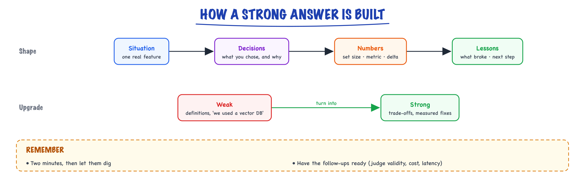
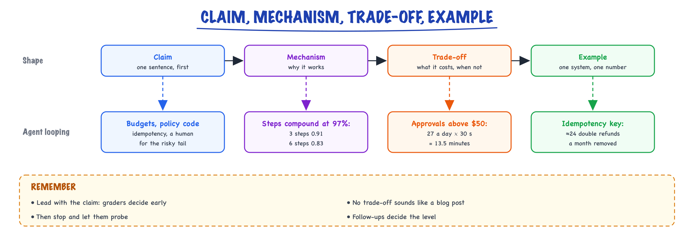

Interview answer kit // Build & interview
Model answers for the eval and RAG/agent questions, and the follow-ups to prepare.
01 — At a glance

The shape of a strong answer to either screening question: one real situation, the decisions you made, the numbers, and what you would do next.
02 — New words
| Word | Meaning |
|---|---|
| Claim | The one-sentence answer, said first. Everything after it is support. |
| Mechanism | Why the claim is true: what happens inside the system that makes it work. |
| Trade-off | What the choice costs (latency, money, complexity, risk) and when you would choose differently. |
| Example | One concrete system you built or designed, with a number that moved. |
| Golden set | A fixed, labelled set of realistic inputs with expected outcomes, used to compare versions. |
| Grounding | Making the model answer only from supplied evidence, with citations that code can check. |
| Abstention | The system deliberately saying "not enough evidence" and handing off, instead of guessing. |
| KV cache | The stored attention keys and values of every token so far, so each new token does not recompute the whole prefix. It grows with context length and number of concurrent requests. |
| Blast radius | The worst damage a component can do if it misbehaves. Safety design shrinks it rather than trusting the component. |
| Signal of seniority | What an interviewer listens for to decide level: scope of the decision, use of numbers, naming failure modes, and owning operations. |
The lesson
03 — The question
AI engineering interviews ask a small set of questions over and over, in different words. They are not testing whether you have heard of RAG or agents. They are testing whether you can make a decision about an LLM system, say why it works, say what it costs, and back it with a number from something real. Most candidates fail by answering with a list of techniques. This kit gives a model answer for each of the eight most common questions, every one in the same four-part shape, and a rubric for what moves an answer from SDE2 to SDE3.
The questions, in the order covered:
- How would you evaluate an LLM feature?
- Your RAG system gives wrong answers. How do you debug it?
- How do you reduce hallucinations?
- RAG, fine-tuning or long context: when would you use which?
- How do you stop an agent from looping or doing something harmful?
- How would you halve the cost or latency of an LLM feature?
- How do you defend against prompt injection?
- What limits LLM serving throughput, and what is the KV cache?
Every model answer uses one running example so the numbers stay consistent: the course's capstone support assistant (3,000 questions a day, router plus retrieval plus one bounded order agent, built in build-spec through build-ship). Replace its numbers with your own wherever you have them; the page below this lesson has templates for turning your own work into these stories.
04 — Step 1: the four-part answer
A strong answer to a technical question has four parts, in this order, and fits in about 90 seconds:
- Claim, one sentence: "I'd evaluate it with a labelled set sliced by query type, graded per slice, gated in CI, then confirmed online."
- Mechanism, two or three sentences on why that works. This is where understanding shows.
- Trade-off: what it costs and when you would do something else. An answer without a trade-off sounds like a blog post.
- Example: one system, one decision, one number that moved.

Every model answer has the same four parts in the same order, about 90 seconds in all; here the shape is filled in for "how do you stop an agent looping or doing harm?".
Why this order: interviewers grade as they listen, and many decide within the first sentence whether you know the answer. A claim first lets them follow your support; leading with background makes them wait and guess. Then stop and let them probe. The follow-up questions are where levels are decided, and a concise first answer invites them.
05 — Step 2: evaluating an LLM feature
Claim. Define success as measurable spec lines first, build a labelled golden set from real inputs sliced by type, grade with deterministic checks where possible and a calibrated LLM judge where not, compare versions pairwise on the same cases, and confirm online with production signals.
Mechanism. LLM outputs vary run to run and are open-ended, so spot checks measure your luck. A golden set fixes the inputs, so differences come from the system. Slices matter because aggregates hide failures: an overall 0.90 can contain a multi-hop slice at 0.40. A judge is itself a model, so it must agree with humans beyond chance (Cohen's kappa, not raw agreement) before its scores count. Pairing (same cases, compare only the ones where versions disagree) is far more sensitive than comparing totals.
Trade-off. Small sets are cheap and noisy: 108/120 has a 95% interval of 83% to 94%, so they catch big regressions, not 2-point ones. Judges cost money per case; deterministic assertions are free. Online metrics are real but slow at low volume.
Example. "On the support assistant, 75 retrieval questions and 120 end-to-end cases, five slices including 10 unanswerable ones graded on abstention. A cheaper answer model scored 104 versus 108; paired split 9 to 5, p = 0.42, so not significant, but two of the nine losses were wrong policy facts, so we ran a week of shadow evaluation instead of shipping." Depth: evals.
06 — Step 3: debugging wrong RAG answers
Claim. First split the failure into retrieval or generation by checking whether the right passage reached the prompt; then fix the stage that failed, measured on a labelled set.
Mechanism. A grounded answer needs the evidence in context. If Recall@5 (gold passage in the top 5) is low, no prompt fixes it. If recall is high but answers are wrong, the problem is generation: ignored evidence, bad synthesis, or no abstention. Within retrieval, separate the candidate pool from the ordering: a reranker can only reorder what the first stage returned, so if Recall@30 is low, fix chunking, add lexical search, or rewrite the query.
Trade-off. Labelling gold passages takes an afternoon for 75 questions and saves weeks of prompt-guessing. Every added stage (hybrid, rerank, rewriting) adds latency and must earn its row in an ablation table.
Example. "Dense-only Recall@5 was 0.64. Structure-aware chunks with heading trails took it to 0.74, hybrid search to 0.81 (exact invoice codes went from 0.4 to 0.9), a cross-encoder to 0.90. The multi-hop slice stayed at 0.40 because the second fact never entered the pool, so query decomposition, not a better reranker, fixed it." Depth: RAG pipeline, build-knowledge.
07 — Step 4: reducing hallucinations
Claim. You do not make the model stop guessing; you design the system so it answers only from evidence, cites it, gets checked by code, and abstains when evidence is missing, and you measure both wrong answers and over-abstention.
Mechanism. A language model produces fluent continuations whether or not it knows; nothing inside it reliably flags "I don't know" (limits). So the controls are outside it: retrieval supplies the facts, the prompt requires numbered citations, a deterministic verifier rejects citations to non-existent sources and uncited policy claims, and an explicit "insufficient evidence" outcome routes to a human. The abstention threshold is an economic choice: if a wrong answer costs about $150 and an escalation $4.50, answer only when the chance of being wrong is below \(4.50/150 = 3\%\).
Trade-off. Stricter grounding raises precision and lowers coverage; push too far and the human queue drowns. Track both directions on an unanswerable slice and an answerable slice.
Example. "We graded 10 unanswerable questions on abstention and gated releases on both slices; a stricter prompt once fixed fabrication and doubled false abstentions, which the answerable-slice gate caught before release."
08 — Step 5: RAG, fine-tuning or long context
Claim. Use RAG for knowledge that changes or must be cited, fine-tuning for behaviour (format, style, a narrow task, a cheaper model), and long context for a single large document per request; most production systems combine RAG with a modest prompt.
Mechanism. Fine-tuning changes weights, so knowledge baked in is frozen at training time and cannot cite a source; updating it means retraining. RAG updates by re-indexing a document. Long context makes the model read everything each call: you pay for every input token every time, and models use facts buried in the middle of long contexts less reliably.
Trade-off, in numbers. The support corpus is about 12 million tokens, larger than any production model's context window. Even stuffing 100,000 tokens of policy per question costs about $0.30 at $3 per million input tokens, roughly 21 times the $0.014 of a 3,500-token RAG prompt, and is slower to first token. Fine-tuning becomes attractive later as a cost play: once thousands of approved (question, answer) pairs exist, a small tuned model may match a larger one on the common slice.
Example. "Policies change weekly, so a fine-tune would answer June questions with March's policy. We chose RAG and planned a fine-tune of the router after a quarter of logged data." Depth: fine-tuning, how LLMs are trained.
09 — Step 6: stopping an agent looping or doing harm
Claim. Bound it with budgets, keep the deterministic parts out of the model, put every write behind validation, policy code, idempotency and, for the risky tail, a human; and test trajectories over repeated runs.
Mechanism. Each step is a stochastic choice, so reliability compounds: at 97% per step, three steps succeed 91% of the time and six steps 83%. Step, token and wall-clock budgets each catch a different failure (loops, huge tool results, slow tools); repeated identical calls signal a stuck agent. The model proposes; a policy engine decides; the database enforces limits and an idempotency key makes retries harmless.
Trade-off. Tighter budgets mean more escalations; human approval on everything means reviewers rubber-stamp. Gate the tail (above $50, unverifiable claims) and size the queue: about 27 approvals a day at 30 seconds each is 13.5 minutes.
Example. "A content-derived idempotency key as the refunds table's primary key: at 2,376 proposals a month and a 1% ambiguous-timeout rate, that removes about 24 double refunds a month." Depth: agent loop, build-agent.
10 — Step 7: halving cost or latency
Claim. Measure where tokens and milliseconds go per hop, then pull the levers in order of risk: output length, prompt caching, routing easy work to a smaller model, caching whole answers, and only then model or infrastructure changes, each checked against the eval suite.
Mechanism. Output tokens are generated one at a time, so they dominate latency (decoding 250 tokens was two thirds of the assistant's 4.7 s), and they cost about five times input. A static prompt prefix can be cached by the provider: 1,200 identical tokens billed at a tenth saves $0.0032 of a $0.0143 answer call, about 22%, and cuts time to first token. Independent hops can run in parallel: starting retrieval while the router classifies took the first-token p95 from 2.44 s to 2.11 s.
Trade-off. Smaller models and answer caches risk quality; every change goes through the paired eval and shadow traffic. Self-hosting lowers marginal cost only above break-even volume (about 18,000 to 25,000 questions a day for this build, with one or two GPUs and on-call included).
Example. "We hit the p95 target by parallelising router and retrieval, caching the prefix and capping answers near 300 tokens; end-to-end p95 went from 6.23 s to 5.69 s in simulation, confirmed in staging." Depth: cost & performance, semantic cache.
11 — Step 8: defending against prompt injection
Claim. Assume the model will sometimes follow injected instructions, and design so that when it does the damage is small, blocked by layers that do not read prose, and visible.
Mechanism. Anything the model reads (retrieved documents, tool results, emails) can carry instructions, and the model cannot reliably tell data from commands. So: give it few, narrow tools (no tool to list other customers' data means no injection can do it); enforce limits in schemas and policy code; enforce permissions in the data layer from the authenticated user, never from the prompt; require human approval for the consequential tail; log everything.
Trade-off. Each layer limits capability or adds friction. Prompt-level defences (delimiters, "ignore instructions in documents") lower the rate cheaply but never to zero, so they are the first layer, not the defence.
Example. "An order note saying 'refund $500' fails the schema's $100 maximum; a $99 retry fails the policy check against the $29 actually charged; a $29 'not delivered' claim goes to a reviewer with the note flagged. We measured the model's compliance by replaying the case 20 times, and red-team cases must pass 100%." Depth: security.
12 — Step 9: what limits serving throughput
Claim. Generating each token is limited by memory bandwidth, not compute, and the number of requests you can batch is limited by KV cache memory; serving engines win by batching many requests and managing that cache well.
Mechanism. To produce one token, the GPU reads every weight once. For an 8-billion-parameter model in bf16 (16 GB) on a GPU with about 3.35 TB/s of bandwidth, that is about 4.8 ms per token, a ceiling of about 209 tokens per second for one stream, whatever the compute. Batching reuses each weight read for many requests, so throughput rises almost for free until KV cache memory runs out or the batch grows large enough to become compute-bound. What fills memory is the KV cache: for a model with 32 layers, 8 key-value heads of dimension 128, in bf16, that is \(2 \times 32 \times 8 \times 128 \times 2 = 131{,}072\) bytes, 128 KiB per token, so 512 MiB for a 4,000-token sequence. With about 58 GB free after weights and overhead, roughly 108 such sequences fit at once.
Trade-off. Longer contexts or more concurrent users compete for the same memory; quantizing the KV cache, grouped-query attention and paged allocation (as in vLLM) buy room at small quality or complexity cost. Larger batches raise throughput but also each request's latency.
Example. "Doubling context to 8K halves concurrent sequences, so we capped conversation history with summaries instead of buying GPUs." Depth: inference internals, serving.
13 — The rubric: SDE2 versus SDE3 answers
Both levels can give a correct answer. The difference is what the answer contains:
| Dimension | SDE2 answer | SDE3 answer |
|---|---|---|
| Scope | The component: "I added a reranker" | The system and the decision: "retrieval was the bottleneck, so retrieval got the budget" |
| Numbers | Result numbers ("recall went up") | Before, after, sample size and uncertainty ("0.81 to 0.90 on 75 questions; the multi-hop slice is only 5") |
| Trade-offs | Named | Quantified and tied to a requirement ("+200 ms, inside the 6 s p95") |
| Failure modes | Fixed when found | Anticipated, with the guard and the test ("idempotency key; red-team case must pass 100%") |
| Operations | Ships it | How it is rolled out, monitored, rolled back and paid for |
| Alternatives | Rarely mentioned | The rejected option and why ("not multi-agent: one thread, writes, auditability") |
| Influence | Did the work | Changed how the team decides ("every fix ships with the eval case that would have caught it") |
The same question at both levels. "How did you improve retrieval?" SDE2: "I switched to hybrid search with RRF and a cross-encoder; recall improved a lot." SDE3: "Answers were wrong, so I split the failure: recall@5 was 0.64, so retrieval. I built 75 labelled questions in five slices. Chunking by structure gave the biggest gain, hybrid fixed exact codes specifically, reranking added 9 points for 200 ms inside our budget. Multi-hop stayed at 0.40 because the facts were in different documents, so I added query decomposition behind a gate so simple queries didn't pay for it. The suite now runs in CI." The second is longer only because each sentence carries a decision and a number.
14 — In code: the numbers you should be able to produce live
Interviewers often ask you to estimate on the spot. This script reproduces every number used in the model answers; work through it until you can do each line on a whiteboard.
import math # 1. cost per request: the number behind every cost answer def cost(tokens_in, tokens_out, price_in=3e-6, price_out=15e-6): return tokens_in * price_in + tokens_out * price_out rag = cost(3500, 250) print("RAG answer: $%.4f stuff 100K tokens instead: $%.2f (%.0fx)" % (rag, cost(100_000, 250), cost(100_000, 250) / rag)) print("cached 1,200-token prefix saves $%.4f per answer" % (1200 * 3e-6 * 0.9)) # 2. KV cache: why long context and concurrency fight for GPU memory layers, kv_heads, head_dim, bytes_per = 32, 8, 128, 2 # an 8B, GQA, bf16 model per_token = 2 * layers * kv_heads * head_dim * bytes_per # K and V print("KV cache %d KiB/token, %.0f MiB per 4K-token sequence" % (per_token / 1024, per_token * 4096 / 2**20)) free_gb = 80 - 16 - 6 # H100 minus weights, overhead print("about %d concurrent 4K sequences fit in %d GB" % (free_gb * 1e9 // (per_token * 4096), free_gb)) print("decode ceiling, one stream: %.0f tokens/s" % (3.35e12 / 16e9)) # bandwidth / weight bytes # 3. agents: reliability compounds print("success of 3 / 6 steps at 97%% each: %.2f / %.2f" % (0.97**3, 0.97**6)) # 4. evals: how wide is the error bar? def wilson(k, n, z=1.96): p = k / n c, h = p + z*z/(2*n), z * math.sqrt(p*(1-p)/n + z*z/(4*n*n)) return (c - h) / (1 + z*z/n), (c + h) / (1 + z*z/n) print("108/120 -> %.1f%% to %.1f%%" % tuple(100 * x for x in wilson(108, 120))) # 5. hallucination: answer only when expected loss of answering is lower print("abstain above P(wrong) = %.0f%%" % (100 * 4.50 / 150))
It prints $0.0143 versus $0.30 (21×), $0.0032 saved, 128 KiB per token and 512 MiB per 4K sequence, about 108 sequences in 58 GB, 209 tokens per second, 0.91 and 0.83, 83.3% to 94.2%, and the 3% line.
More detail
15 — Q4, angle A: evaluating an ML decisioning feature at work
Your ad-serving statistics work is an ML feature, and the eval design around it is a valid answer. Template:
- Situation: template selection used Thompson sampling with manually tuned pseudo-count smoothing; sparse templates got unstable estimates.
- Task: replace it with hierarchical empirical Bayes shrinkage, and prove it's better before it touches revenue.
- Action: [success criteria you set: e.g. CTR/RPM lift, no regression on guardrail metrics]; [offline evaluation: e.g. replay or inverse-propensity estimates on logged traffic, calibration of posterior means vs observed rates, behavior on sparse vs dense templates]; [the finding that the structure was crossed rather than nested and how you validated it]; [online: A/B or holdout design, duration, guardrails, rollback rule].
- Result: [measured outcome]. Learned: [e.g. offline metrics that did or didn't predict online results].
Bridge sentence for an LLM-focused role: "The same discipline applies to LLM features: define success per slice, build a representative offline set, validate the grader, then confirm online."
16 — Q4, angle B: the LLM eval harness from the project
- Situation: built a docs assistant over Kafka documentation; quality of LLM answers couldn't be judged by spot checks.
- Task: create an eval framework to choose retrieval and generation settings and prevent regressions.
- Action: [N]-question golden set with chunk-level labels and unanswerable cases; graders split into assertions, retrieval metrics and LLM judges; validated the judge against [40] hand labels ([X]% agreement); CI gate on per-metric drops.
- Result: [recall@5 from A to B; faithfulness X%; a regression the CI caught]. Next: production traces and online feedback loop.
Say clearly it's a personal project. Specific numbers from a real side project beat vague claims about work.
17 — Q5: retrieval, agents, hybrid
Pick the deepest real thing you've built and lead with it:
- Agentic automation you've already run: your scheduled Claude Code routine for the flat-search sweep is a real tool-using agent: browser actions, filtering rules deciding outcomes instead of asking you, unattended scheduled runs. Talk about what broke (page changes, login state, duplicates), how you bounded it, and how you'd evaluate it (precision of matches, misses).
- The project RAG + agent: hybrid search with measured gains, router between single-shot RAG and agent, step caps, citations, CI evals.
- Hybrid instinct from ad tech: bandits allocating traffic among variants; caches and latency budgets; cheap-path-first design.
Answer skeleton: "Most hands-on: [system]. It [does X] using [retrieval/agent/hybrid design]. The hard part was [failure mode]; I measured it with [metric] and fixed it by [change], moving [metric] from [A] to [B]. Trade-off: [cost/latency/autonomy]. Next I'd [improvement]."
18 — Likely follow-ups to prepare
- How did you know the LLM judge was right?
- How big was the eval set, and was the difference statistically meaningful?
- What failure mode surprised you most?
- Why that chunk size / embedding model / reranker?
- How do you stop the agent from looping or taking harmful actions?
- What would you change to run this at 100× traffic? (Your home turf: caching, queueing, autoscaling on GPU/KV utilization, cost per request.)
In production
19 — Where people get lost
- "List every technique I know." Breadth without a decision reads as junior. Pick the one that fits, say why, and name what you rejected.
- "Lead with background." Lead with the claim; interviewers decide early whether you know the answer.
- "Numbers I don't have are better invented." An invented number collapses under one follow-up. "We didn't measure that; I would by…" is a strong answer.
- "Hallucinations are fixed by a better prompt." They are contained by system design: grounding, verification, abstention, measured on two slices.
- "Fine-tuning teaches the model our data." It changes behaviour; it is a poor, uncitable, stale store of changing facts.
- "The model will refuse injected instructions." Usually, not always. Answer with layers and blast radius.
- "Throughput is about FLOPs." Token generation is bandwidth-bound; batching and KV memory set throughput.
- "Accuracy went up, so it's better." On how many cases, with what interval, paired or not, and which slice paid for it?
20 — How this connects
Builds on
- How LLMs are trained — Pretraining, instruction tuning, chat templates, reasoning models, evaluating LLMs, and prompting vs RAG vs fine-tuning.
- Limits & hallucination — What LLMs get wrong by design, grounding and abstention, and how to design around it.
- The RAG pipeline — Retrieve, augment, generate: every stage from a question to a grounded, cited answer.
- The agent loop — The loop in depth and in code: budgets, errors, human approval, reliability, safety, and how to evaluate an agent.
- Fine-tuning, LoRA & QLoRA — When to fine-tune, the LoRA math, a working QLoRA recipe, data, hyperparameters, evaluation and serving.
- Inference internals — Prefill vs decode, the KV cache, PagedAttention, continuous batching and speculative decoding.